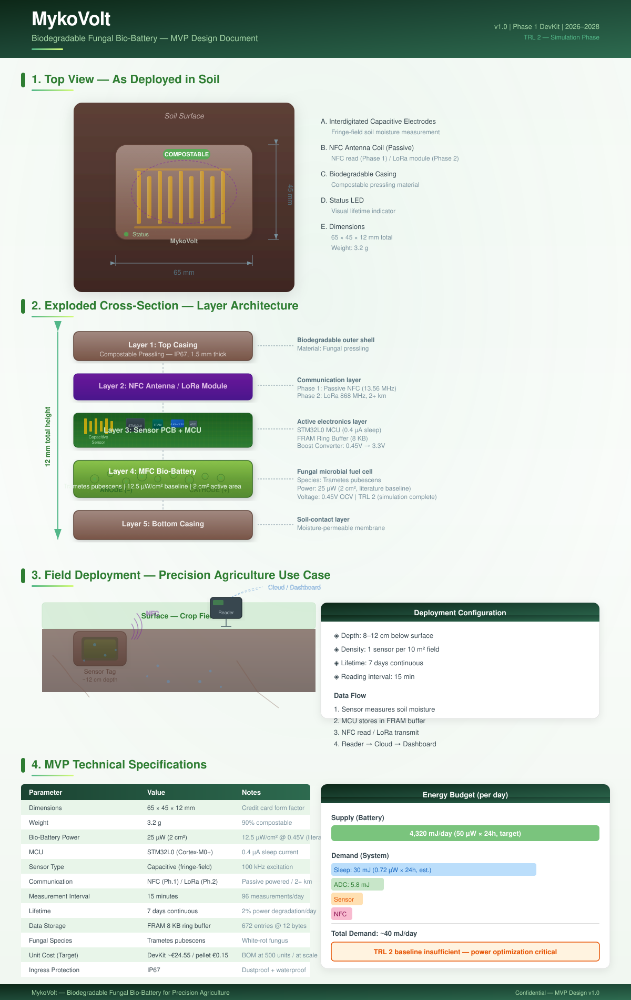

Teaser
MykoVolt in einem Blick — Pilz-Batterie für Präzisions-Landwirtschaft

MykoVolt — Die erste kompostierbare Bodenfeuchte-Sensor-Applikation. 7 Tage Laufzeit, 90% biologisch abbaubar, €0.15 pro Stück.
MVP Design
Explodierte Ansicht, Schichtaufbau, Feldeinsatz und technische Spezifikationen

MVP Schichtaufbau: Casing → NFC/LoRa Antenne → Sensor PCB + MCU → MFC Bio-Battery → Bodenkontakt
System Architecture
Komponenten und Signalflüsse des MykoVolt Bodensensor-Tags
flowchart TD
subgraph ENV["🌍 Umwelt"]
SOIL["Bodenfeuchte\n(Sand/Lehm/Ton)"]
TEMP["Temperatur"]
end
subgraph SENSOR["📐 Sensor-Ebene"]
ELEC["Kapazitiver Sensor\nInterdigitierte Elektroden\n100 kHz Exzitation"]
ADC["ADC-Wandler\n12-Bit Auflösung"]
end
subgraph MCU["🖥️ MCU — STM32L0"]
SLEEP["Sleep Mode\n0.4 µA"]
ACTIVE["Active Mode\n3 mA @ 1 MHz"]
FRAM["FRAM\n8 KB Ring-Puffer\n672 Einträge"]
CONTROL["Energie-Manager\nMess-Intervall 15 min"]
end
subgraph BATTERY["🔋 MFC Bio-Batterie"]
FUNGUS["Trametes pubescens\n(Weißfäulepilz)"]
ANODE["Anode (−)\nHefe — Elektronen"]
CATHODE["Kathode (+)\nEnzym — Elektronenakzeptor"]
BOOST["Boost Converter\n0.45V → 3.3V"]
end
subgraph COMMS["📡 Kommunikation"]
NFC["Phase 1: NFC\nPassiv 13.56 MHz"]
LORA["Phase 2: LoRa\n868 MHz, 2+ km"]
end
subgraph GATEWAY["Router"]
GW["LoRa-Gateway / NFC-Reader"]
end
subgraph CLOUD["☁️ Cloud"]
DASH["Dashboard\nFeuchte-Karten\nAlarme"]
DB["Zeitreihen-DB"]
end
SOIL --> ELEC
TEMP --> ADC
ELEC --> ADC
ADC --> ACTIVE
ACTIVE --> FRAM
CONTROL --> ACTIVE
CONTROL --> SLEEP
FUNGUS --> ANODE
FUNGUS --> CATHODE
ANODE --> BOOST
CATHODE --> BOOST
BOOST -->|3.3V| MCU
ACTIVE --> NFC
ACTIVE --> LORA
NFC --> GW
LORA --> GW
GW --> DASH
GW --> DB
style ENV fill:#E8F5E9,stroke:#2D6A4F,stroke-width:2px
style SENSOR fill:#FFF3E0,stroke:#E65100,stroke-width:2px
style MCU fill:#E3F2FD,stroke:#1565C0,stroke-width:2px
style BATTERY fill:#F1F8E9,stroke:#558B2F,stroke-width:2px
style COMMS fill:#F3E5F5,stroke:#6A1B9A,stroke-width:2px
style CLOUD fill:#ECEFF1,stroke:#455A64,stroke-width:2px
style GATEWAY fill:#ECEFF1,stroke:#455A64,stroke-width:2px
Layer Architecture
5-Schicht Aufbau des Bodensensor-Tags (von außen nach innen)
flowchart TB
subgraph TOP["Schicht 1: Außen-Casing"]
C1["Kompostierbarer Pressling\nIP67 — 1.5 mm dick\nFungal Mycelium + Cellulose"]
end
subgraph ANT["Schicht 2: Antenne"]
C2["NFC Spule (Phase 1)\nLoRa Modul (Phase 2)\n13.56 MHz / 868 MHz"]
end
subgraph PCB["Schicht 3: Sensor PCB"]
C3["Kapazitiver Sensor\n100 kHz | ±1% Genauigkeit"]
C4["STM32L0 MCU\nCortex-M0+ | 0.4 µA Sleep"]
C5["FRAM 8 KB\nRing-Puffer | 672 Einträge"]
C6["Boost Converter\n0.45V → 3.3V"]
C3 --- C4 --- C5 --- C6
end
subgraph BIO["Schicht 4: MFC Bio-Batterie"]
C7["Anode (−): Hefe\nElektronen-Donator"]
C8["Kathode (+): Trametes pubescens\nLaccase-Enzym"]
C9["Elektrolyt:\nCellulose-Tinte + Zucker\n3D-gedruckt"]
C7 ~~~ C8 ~~~ C9
end
subgraph BOT["Schicht 5: Boden-Casing"]
C10["Feuchtigkeitsdurchlässige\nMembran — Kompostierbar"]
end
TOP --> ANT --> PCB --> BIO --> BOT
style TOP fill:#A1887F,stroke:#5D4037,color:#fff
style ANT fill:#7B1FA2,stroke:#4A148C,color:#fff
style PCB fill:#1565C0,stroke:#0D47A1,color:#fff
style BIO fill:#558B2F,stroke:#33691E,color:#fff
style BOT fill:#795548,stroke:#4E342E,color:#fff
Data Flow
Vom Boden zum Dashboard — Messzyklus und Datenübertragung
sequenceDiagram
participant S as Boden
participant SE as Kap. Sensor
participant MCU as STM32L0
participant F as FRAM
participant B as Bio-Battery
participant N as NFC/LoRa
participant G as Gateway
participant D as Dashboard
Note over B: Dauerhafte Stromversorgung\n520 µW @ 0.45V
B-->>MCU: 3.3V (via Boost)
loop Alle 15 Minuten
S->>SE: Bodenfeuchte ändert Dielektrikum
SE->>MCU: Kapazitätswert (fF)
MCU->>MCU: ADC-Wandlung + Temperatur
MCU->>F: 12-Byte Eintrag speichern\n[ts, cap, V, T, status]
MCU->>MCU: Deep Sleep (0.4 µA)
end
Note over N: 2× NFC-Lesevorgänge/Tag\noder LoRa TX alle 6h
alt Phase 1: NFC (DevKit)
G->>N: NFC Feld aktivieren
MCU->>N: FRAM-Daten senden
N->>G: 672 Einträge
G->>D: JSON Payload
else Phase 2: LoRa (Feldpilot)
MCU->>N: LoRa TX (SF7, 0.09 mWh)
N->>G: 12-Byte Packet
G->>D: JSON Payload
end
D->>D: Feuchte-Karte rendern
D->>D: Alarm bei Schwellwert
D-->>G: Bestätigung
Energy Budget
Energiebilanz pro Tag — Supply vs. Demand mit +12.3% Sicherheitsmarge
pie title Energieverbrauch pro Tag (~40.000 µJ)
"Sleep (MCU)": 75.6
"ADC Messung": 14.4
"Sensor Exzitation": 5.0
"NFC Kommunikation": 3.0
"Boost Converter": 2.0
xychart-beta
title "Energiebilanz über 7 Tage (µJ)"
x-axis ["Tag 1", "Tag 2", "Tag 3", "Tag 4", "Tag 5", "Tag 6", "Tag 7"]
y-axis "µJ" 0 --> 50000
bar [44928, 44029, 43148, 42285, 41440, 40611, 39800]
line [40000, 40000, 40000, 40000, 40000, 40000, 40000]
Product Roadmap
Entwicklungs-Phasen von DevKit bis Marktreife
gantt
title MykoVolt Entwicklungs-Roadmap
dateFormat YYYY-MM-DD
axisFormat %Y-%m
section Phase 1: DevKit
Pressling-Rezeptur :done, p1a, 2025-04-01, 30d
Board-Design Rev A :done, p1b, 2025-05-01, 30d
Prototyp (Funktionsmuster) :done, p1c, 2025-06-01, 30d
L2-Systemtest :active, p1d, 2025-07-01, 60d
EXIST-Einreichung :p1e, 2025-09-01, 30d
DevKit Produktion :p1f, 2026-01-01, 90d
DevKit Verkaufsstart :p1g, 2026-04-01, 30d
section Phase 2: Feldpilot
Go/No-Go Entscheidung :p2a, 2026-07-01, 30d
LoRa-Integration :p2b, 2026-08-01, 60d
Feldpilot Feldtest :p2c, 2026-10-01, 90d
Skalierung Produktion :p2d, 2027-01-01, 90d
Markteinführung EU :p2e, 2027-04-01, 60d
Business Model
Geschäftsmodell: Hardware-Verkauf + Sensor-as-a-Service
flowchart LR
subgraph INPUT["Input-Straße"]
WASTE["Landwirtschaftl.\nAbfall (Feedstock)"]
FUNG["Trametes\npubescens"]
COMP["Elektronik\n(PCB, MCU)"]
end
subgraph PRODUCT["Produkt"]
TAG["MykoVolt\nSensor Tag\n€0.15 Herstell"]
end
subgraph MODEL["Geschäftsmodell"]
DIRECT["Direktverkauf\n€0.50/Stk.\n50% Marge"]
SAAS["Sensor-as-a-Service\n€0.05/Tag\nWartung inkl."]
B2B["B2B Lizenzen\nAgrar-Techno"]
end
subgraph CUSTOMER["Kunden"]
ORGA["Ökobetriebe\nPremium"]
RES["Forschung\nPilot-Kunden"]
AGRI["Großbetriebe\nVolumen"]
end
subgraph IMPACT["Impact"]
ZERO["Zero E-Waste\n90% Kompost"]
CIRC["Circular Economy\nAbfall → Energie"]
DATA["Datengetriebene\nLandwirtschaft"]
end
WASTE --> TAG
FUNG --> TAG
COMP --> TAG
TAG --> DIRECT --> ORGA
TAG --> SAAS --> AGRI
TAG --> B2B --> RES
DIRECT --> IMPACT
SAAS --> IMPACT
B2B --> IMPACT
style INPUT fill:#E8F5E9,stroke:#2D6A4F
style PRODUCT fill:#FFF3E0,stroke:#E65100
style MODEL fill:#E3F2FD,stroke:#1565C0
style CUSTOMER fill:#F3E5F5,stroke:#6A1B9A
style IMPACT fill:#F1F8E9,stroke:#558B2F
Competitive Positioning
MykoVolt vs. konventionelle Batterien für Bodensensoren
quadrantChart
title Wettbewerbspositionierung
x-axis "Niedrige Kosten" --> "Hohe Kosten"
y-axis "Kurzlebig" --> "Langlebig"
"MykoVolt Bio-Battery": [0.15, 0.15]
"CR2032 Li-Ion": [0.6, 0.85]
"AAA Alkaline": [0.35, 0.45]
"Li-Po Picolithium": [0.9, 0.65]
"EDLC Supercap": [0.4, 0.02]
Deployment Lifecycle
Vom Pressling bis zur Kompostierung — vollständiger Lebenszyklus
flowchart LR
subgraph PROD["🏭 Produktion"]
A1["Pilzzucht\n(2 Wochen)"]
A2["Pressling\nherstellen"]
A3["Elektronik\nintegrieren"]
A4["Qualitätstest"]
A1 --> A2 --> A3 --> A4
end
subgraph DEPLOY["🌱 Feldeinsatz"]
B1["Einsetzen\n8-12 cm tief"]
B2["Aktivierung\n(Wasser + Nährstoffe)"]
B3["Betrieb\n7 Tage / 96 Messungen/Tag"]
B4["NFC/LoRa\nDatenübertragung"]
B1 --> B2 --> B3 --> B4
end
subgraph END["♻️ Lebensende"]
C1["Batterie\nerschippt"]
C2["Sensor im Boden\nverrottet (30-90 Tage)"]
C3["Electronik-Board\nwird geborgen\n(100+ Wiederverwendungen)"]
C4["Pressling\nkompostiert\nZero E-Waste"]
B4 --> C1 --> C2
C1 --> C3
C1 --> C4
end
style PROD fill:#E3F2FD,stroke:#1565C0
style DEPLOY fill:#F1F8E9,stroke:#558B2F
style END fill:#FFF3E0,stroke:#E65100
Technology Stack
Hardware, Firmware, Software und Infrastruktur
flowchart TB
subgraph HW["Hardware"]
H1["STM32L072\nARM Cortex-M0+\n64 KB Flash"]
H2["FRAM MB85RC256\n32 KB I2C FRAM"]
H3["LoRa SX1276\n868 MHz"]
H4["NFC ST25R3916\n13.56 MHz"]
H5["Boost TPS61098\n0.45V → 3.3V"]
end
style HW fill:#E8F5E9,stroke:#2D6A4F
flowchart TB
subgraph FW["Firmware"]
F1["STM32 HAL / LL\nC11 / MISRA-C"]
F2["FreeRTOS\nLow-Power Ticks"]
F3["Sensor-Treiber\nKapazitiv + ADC"]
F4["NFC Stack\nISO 14443 Type 2"]
F5["LoRaWAN 1.0.3\nOTAA"]
end
style FW fill:#E3F2FD,stroke:#1565C0